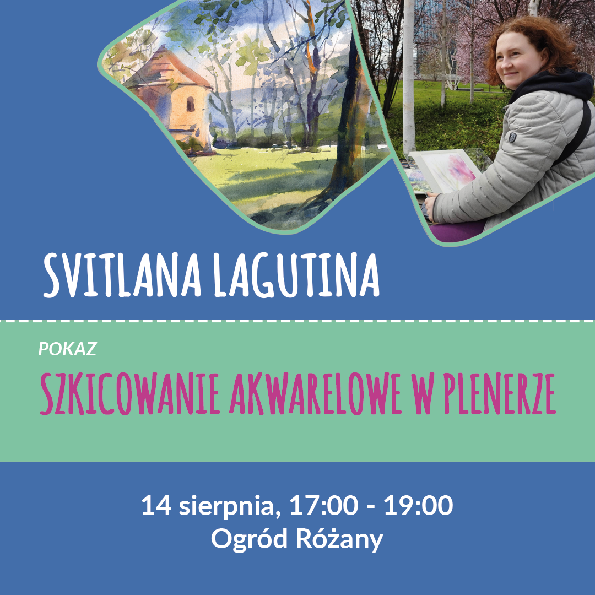
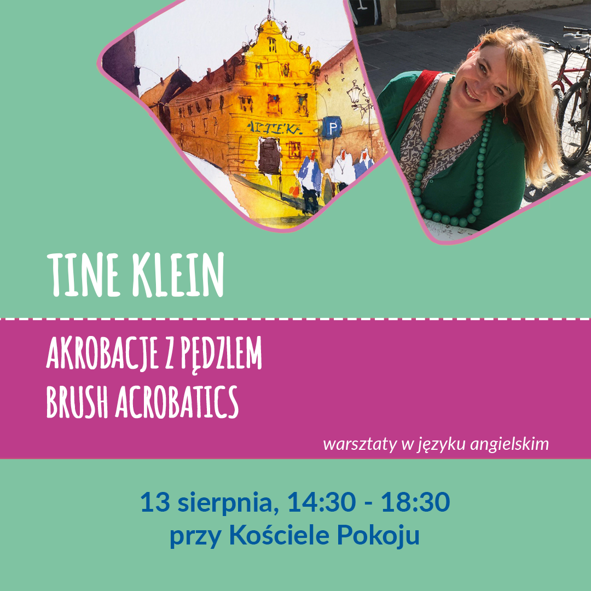
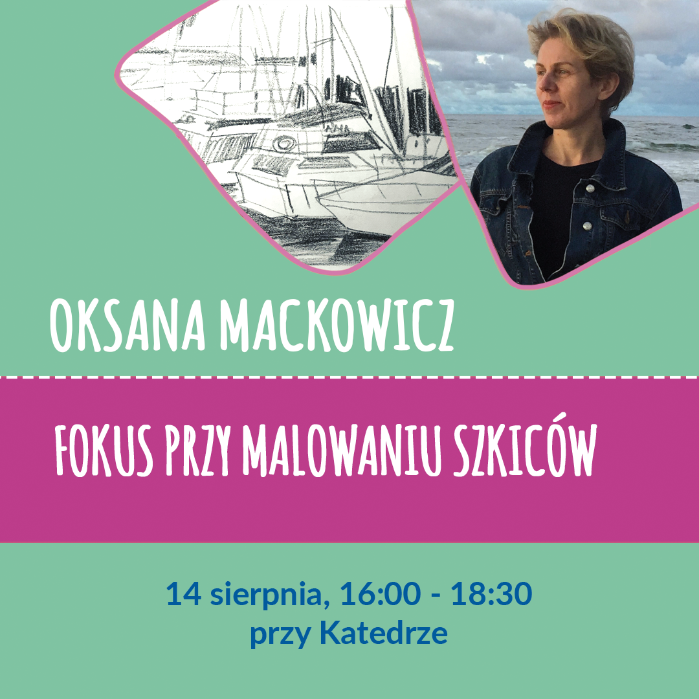

On August 12-15, 2023, the second Festival of Urban Sketching took place in Świdnica, attended by over 150 people from several countries. As part of the event, there were 10 workshops, 2 exhibitions, watercolor shows, presentations, art fairs, sketch fights, drink and draw meetings, and even a flea market.
We would like to thank all participants for creating a wonderful, creative and friendly atmosphere and for wonderful sketches! We thank the volunteers for their invaluable help. We would like to thank the city of Świdnica, patrons, sponsors and partners for their support, and the Świdnica Cultural Center for great cooperation in organizing this event.
We hope that next year we will also meet in Świdnica!
In the meantime, we invite you to sketch-walks in various Polish cities - information can be found in the Urban Sketchers Poland group on Facebook.
national community of Urban Sketchers.
During the entire festival, you will be able to see an exhibition of drawings of Polish Urban Sketchers at the Photography Gallery of the Świdnica Cultural Center. Sketches made during the festival will be included in post-festival exhibition.
In the Theater Foyer, there will be a Roman Szmal stand, where you will be able to test Aquarius watercolors, and stands of Caran d'Ache and Moleskine.
People who have purchased a festival pass will receive a badge that provides various discounts at our partners at the fair and in local cafes and restaurants, as well as free entry to the Town Hall Tower with a great view. All places with discounts are marked on the map below.
Fado and Park hotels offer a 10% discount on the password "Urban Sketchers" when booking directly by phone.
The Wiesław Waszak Materials for Artistic Creativity store in Wrocław (Plac Polski 3/4, ASP building) offers all participants of the event a 10% discount on Cretacolor products from August 12 to 31.
Due to numerous questions about registration for the festival in Świdnica, we would like to inform you that both tickets for the festival and all workshops were sold out in 24 hours! Thank you very much for your interest in our event and we encourage people who have not managed to buy tickets to join us anyway. Most activities such as demos, lectures and sketch-walks will be free and open to the public. You will also be able to test and buy art materials at the stands of our sponsors, take part in competitions and see an exhibition of sketches. Check above the entire festival schedule with free activities highlighted in blue.
Watercolor sketching in the interior
The watercolor master Krzysztof Ludwin will present and talk about his sketching technique live in the auditorium of the Świdnicki Theatre. Participants will be able to watch the process on a large screen.
Free entrance.
About the instructor
Krzysztof Ludwin - a native of Krakow, inextricably and constantly connected with this city by work and creativity. For over a quarter of a century, his greatest passion has been watercolor, to which he devoted his artistic work, as well as his doctoral thesis. Studying the works of the classics of this technique, he is still experimenting in search of new means of expression. His paintings seem to be colorful poems whose main protagonists are light and color. With extraordinary skill, it reflects the transparency of the air, the subtle play of light and shadow, and the changing color reflections. He intuitively captures from reality what is fleeting and preserves the short-term impression and mood of the moment with watercolors. The subjects of his works are most of all urban scenes and landscapes.
Instagram: kristof_ludwin

Watercolor sketching on location
Demonstration of urban watercolor sketching. During the show, the artist will talk about what she focuses on when choosing a place and an object to paint.
Choice of composition. Brief information about the materials used by the artist. Demonstration of watercolor sketching techniques that allow you to quickly convey the atmosphere of the place. Questions and answers.
Free participation
About the instructor
Svitlana Lagutina - painter - watercolorist, graphic artist. Born in Kiev (Ukraine) in 1979. She graduated from the Kiev National University of Construction and Architecture in the specialty of Architecture in 2005. Since 2015, she has been living and working in Poland. She is a laureate of several international watercolor painting competitions.
Svitlana is an artist who depicts the world around her, most often she creates from nature. Her favorite subjects are portraits, flowers, outdoor etudes.
Instagram: svitanola_art
There is a limit of participants in each class. The cost of individual workshop is PLN 50. You can sign up for any number of workshops. WARNING - some classes overlap, please check the schedule before signing up!
About the workshop
“Learn how to sketch convincing roomportraits”
1. ANALYSIS composition, perspective, s, shadowing
2. SKETCHING TECHNIQUE with ed pencils
3. WATER TECHNIQUE from light to dark
4. FINISHING TRICKS
We learn to
- sketch convincing roomportraits
- mix and apply waters for shadows and light areas
- create textures and define lights and darks
Materials
- 3-4 different s of Pablo ed pencils (or other non-soluble)
- 300 gsm water paper, size A4 is sufficient (and/or water sketchbook)
- waters
- water brush + water
- a stool or a sitting mat
About the instructor
Bettina Ruppert is a German contemporary artist, settled in beautiful Hohenlohe. She started very young and works as a watercolorist, designer and illustrator in her own company.
She also teaches workshops and exhibits her artwork.
Landscapes as well as painting people are favorite subjects in her art. She transforms ordinary people to protagonists of her work. Her series "People at Work" is a great example.
Sensibility, accurate technique, talent and last but not least a strong will are key to her success.
Among other techniques or media, water is her . Nature and people around her, travel sketching adventures and workshops are her source of inspiraton.
Her motto: Don't waste your time, draw expressively and get creative!
Instagram: bettina_draws
Sold out
About the workshop
“Impression sketch - people in motion and space”
As the title of the workshop indicates, we will talk about drawing people in motion and placing them in space. Participants will learn how to think about drawing a moving figure and what aspects to pay attention to and which to ignore. They will have the opportunity to learn to observe people and space in order to better plan the composition in the drawing.
During the workshop, we will also focus on the use of various means of expression to enhance the impression of movement. We will also talk about the impression sketch and discuss what it actually is and how to use it.
Using practical exercises, workshop participants will have the opportunity to test their skills and learn how to effectively translate their observations into a drawing.
Materials
- pencils
- fineliners
- markers
- brushpens
- ink + accessories (pens, sticks, nibs)
- paper for wet techniques
- water
About the instructor
Hi! I'm Krzysztof. I was born in Silesia in 1982. Since I was a child, I followed my love for games and comic books, and I never parted with a piece of paper and crayons. Today, I am primarily a creative computer game designer. However, my passion and escape from the monitor screen are traditional drawing and painting techniques. In my free time, I prepare young people for exams in drawing and painting. I can say without fear that in drawing I am mainly interested in the subject of people and movement, expressive, reportage capturing of the moment.
Instagram: krzysztof_kaluszka_art
Sold out
About the workshop
“Let’s mix it! Gouache, water and crayons in quick sketches”
In these workshops, participants will have the opportunity to learn about the properties of various painting and drawing techniques and how to combine them. We will focus on the best possible use of a small amount of materials with a limited color palette. Thanks to the combination of paints and crayons, we will experiment with textures to obtain interesting effects. We will also play with the order of layering, because urban sketching is not only about adding color to the outline. The composition can be built using blots of color, and lines can be added next. The final effect depends on how well we know our materials, so let's have fun and experiment with them as much as possible!
Materials
- gouache paints: white and 3 basic colors (ultramarine, yellow, magenta) + optional colors that you like (for me it's sky blue, bright orange, ocher, burnt sienna and indigo)
- watercolors: 3 primary colors
- colored pencils: it is best to have several pencils with different properties: regular and water-soluble. For me, a set works well: yellow ocher, indigo or other dark blue, violet, dark red or warm brown
- Neocolor II Aquarelle - water-soluble wax pastels
- waterbrush
- paper 140-240gsm (sheets or sketchbook)
About the instructor
Justyna Wojnowska is a graduate of the High School of Fine Arts in Poznań and an enthusiast of monuments. She participated in the international Urban Sketchers symposia in Porto and Amsterdam, the Prague Sketch Fest drawing festival, Prague Sketch Marathon, Sketchtour Schwäbisch Hall and many other events related to urban sketching. She was a guest of the Farindola International Arts Festival (Italy) and a resident in Rennes (France). She is the organizer of drawing meetings, and since 2018, she has been conducting artistic workshops throughout Poland, mainly on sketching architecture and various painting and drawing techniques. She is also the author of online lessons on Urban Sketching implemented as part of the "Art for Everyone" project, which was co-financed by the Ministry of Culture and National Heritage.
Instagram: wojnowskajustyna
Sold out

About the workshop
“Brush acrobatics”
The name of my class should be Brush Acrobatics. How to be creative with paint and break all the rules. Technique knowledge makes us confident and brave! Laughter and mistakes are allowed and even welcome!!!
What do I teach in the workshop? Sounds a bit like cleaning the apartment! Wiping, cleaning, scraping, wet and dry! But what we do is much more fun than cleaning and dirty hands are guaranteed. Depending on the subject, I'll show what you can do with technology.
Materials
- pointed watercolor brush
- watercolors
- watercolor paper 300gsm
- cloth or paper towel to wipe the brush
- water
About the instructor
Tine Klein is an Urban Sketcher from Switzerland. Already during her studies in the field of Spatial Planning, she worked as a draftsman for urban planning and visualized social problems for a research institute. Then she realized that she was an artist.
Today, she works with anything she can always carry with her or find on the go, for example, beer coasters or river stones. Everything becomes art in her hands.
Tine Klein travels a lot, gaining experience while studying in many countries. She learned the most where her pen was her only language, because when words fail, the power of observation sharpens.
There is a simple solution to almost everything, even if it is sometimes hidden.
Art should be expressive, fun and simple. This is what Tine teaches in her painting courses.
Tine Klein works as an art lecturer at Atelier Herz der Kunst, Kunstverein Bremgarten and the Allensbach Art Academy. She exhibits her works in Switzerland, Germany and the USA.
Instagram: tine.klein
Sold out
About the workshop
“Contour and color”
is an expression of emotions and black and white drawing is an intellectual game of the artist with the subject. Sketching on location with a waterproof pen allows you to frame and define the motif that fascinated us. Supplementing with an abstract, imaginary color is a pleasure and relaxation. Yes, you can try to reflect reality, but ... why (in my humble opinion). So sketching, practicing observation skills and building form is mind training. Covering a black and white drawing with color reflects our emotions of the moment. We can forget our troubles for an instant. Thus, the exercise will be making a drawing on watercolor paper, preferably in a sketchbook, and covering it with color. Amen.
Materials
- watercolors
- waterproof pen
- watercolor paper/sketchbook
- brush + water
About the instructor
Krzysztof Ludwin - a native of Krakow, inextricably and constantly connected with this city by work and creativity. For over a quarter of a century, his greatest passion has been watercolor, to which he devoted his artistic work, as well as his doctoral thesis. Studying the works of the classics of this technique, he is still experimenting in search of new means of expression. His paintings seem to be colorful poems whose main protagonists are light and color. With extraordinary skill, it reflects the transparency of the air, the subtle play of light and shadow, and the changing color reflections. He intuitively captures from reality what is fleeting and preserves the short-term impression and mood of the moment with watercolors. The subjects of his works are most of all urban scenes and landscapes.
Instagram: kristof_ludwin
Sold out
About the workshop
“Capturing architecture with water - how to deal with complex subjects in a short time”
During the workshop we will practice creating architectural sketches using watercolors. The main topic will be the creation of compositions that capture the dominant, simplification of complex views and the selection of consistent colors. I will also present the most important aspects of watercolor painting and share the technique of working with the right amount of water, paint density and building a sense of space in the image. After a short introduction, we will paint one painting in the open air, and I will present the painting process step by step by making a demonstration painting.
The workshop is for both beginners and advanced adults aged 18+.
Materials
- watercolor paints (colors: cadmium yellow, burnt sienna, violet, hookers green or yellow green, cerulean blue or manganese blue)
- paint mixing palette or plate
- watercolor paper 300g format from A4 to A3
- a few pages from the sketchbook
- pencil
- board for sticking paper
- masking tape for sticking paper
- brush + water
About the instructor
Kasia Wiercinska
I am a water artist, originally from Poland, currently living in Oslo, Norway. My profession is architecture, however, I decided to follow my dreams and become an artist.
Throughout my life, I was interested in many creative fields from painting and sculpture to architectural design. I have been using water as a self-taught artist from an early age. However, my new art journey started in Christchurch, New Zealand where I received professional water training in 2019-2020.
Travels and journeys are my main inspiration. I always try to capture the beauty and the atmosphere of the surrounding landscape wherever I go. For me, art is a great way to connect with the local landscape, observe activities of everyday life and feel the energy around us. When painting, I try to tell a story about a place, exactly as I want to remember it, so not always exactly what it looks like. My subjects are cityscape and seascape, especially with boats or waves.
I really enjoy sharing my passion with others. Teaching water is a great way to do that. Currently, I give private tutoring in Oslo, as well as online. I run regular classes for artists at any level - both beginners and advanced.
Instagram: kasia_wiercinska
Sold out
About the workshop
“Colored pencils for adults”
Many people associate colored pencils with school supplies for children and they are sometimes underestimated by adult artists. Meanwhile, it is a very versatile, universal and practical medium that is gaining more and more popularity. During the workshop you will learn different types of colored pencils, how to use them and combine them with other techniques. You will find out how useful they are in urban sketching and why it is worth always having at least a few of them with you. I'll show you colored pencil exercises, tricks and different types of paper suitable for this technique, and then I will help you draw a sketch on location.
Materials
- craft paper (brown) 2 sheets A4
- smooth (hot press) watercolor paper 300g 1 sheet A4
- water-soluble colored pencils - a few basic colors plus white (e.g. Mondeluz, Prismalo, Inktense)
- waterproof pen
- waterbrush / brush + water
- A4 pad + clip
About the instructor
Dora Pindur - violinist and urban sketcher. She gained drawing experience at architectural drawing courses, Urban Sketching workshops and on the street - during countless meetings of Urban Sketchers, traveling around the country and abroad. She took part in Prague Sketch Fest 2020, she was also a guest artist at the “Relations” festival in Częstochowa. Her drawings could be seen at exhibitions in Wrocław, Kraków, Poznań, Częstochowa, Tuchola and Świdnica. She loves drawing (especially architecture) and traveling. She organized many drawing meetups (also online), and wrote several articles about urban sketching in Poland for the international Drawing Attention magazine. She runs urban sketching, colored pencils and watercolor workshops. She always has a pocket sketchbook and something to draw with her, just in case.
Instagram: dora_sketcher
Sold out
About the workshop
“Sketches in frames”
A sketchbook treated like a camera, but recording reality in an impressionistic, processed way, exploiting the advantages of a new look at drawing from flaws, errors and shortcomings. A sketchbook on a journey on foot, by train, by bus and in ordinary inner journeys expressing emotions with the help of processed urban and rural landscapes. A sketchbook filled with adjacent frames that interact and tell about the moments captured on a piece of paper.
Materials
- black fineliners
- sketchbook
- other tools of the participants' preference (paints, crayons, pencils, etc.)
About the instructor
Krzysztof Gawronkiewicz - graphic artist, painter, storyboard artist, creator of comic books. A graduate of the Art High School, then twice a student of the Academy of Fine Arts in Warsaw (Faculty of Interior Design, Faculty of Graphics). He is the author of drawings for comics, e.g. “Micropolis”, “Essence”, “Achtung Zelig”. He started creating his first comics in elementary school.
The artist has been awarded many times at the International Festival of Comics and Games in Łódź, including the Grand Prix twice. Twice he took part in the international comics workshop "City Stories" in Łódź, which resulted in an anthology. An entire issue of "Zeszyty Komiksowe" was also devoted to him. He published, among others, in "Nowa Fantastyka", "Gazeta Wyborcza", "Ślizg", "AQQ", "Wprost" and the "Aktivist" magazine. He also works for advertising. Gawronkiewicz's works have been shown, among others, in Paris, Berlin, Angouleme, Lisbon, Kyoto, Tel Aviv, Bratislava, Vienna, Brussels, Warsaw, Krakow and Wroclaw.
In the Urban Sketchers Poland group, he has been showing his everyday life for some time through extremely intriguing black and white sketches.
Instagram: krzysztofgawronkiewicz
Sold out

About the workshop
“Focal point in sketching”
When you start a new sketch, do you ask yourself these questions:
What should I draw?
What is worth focusing on?
What to leave out?
In this workshop we will try to find answers. We will discuss where to start working and how you can create completely different sketches by changing the focus on different layers. We will learn how to look at what we draw to see the most important things.
Materials
- paper
- pencil
- fineliner
- marker
About the instructor
Oksana Mackowicz - an artist of Ukrainian origin, working as an architect, which makes architecture one of her favorite topics for sketching. Each city is alive, has its own rhythm and heartbeat, and Oksana tries to show this in her works. He mostly uses graphic techniques: ink, pencil and markers, but he also likes watercolors. Meetings of the Urban Sketchers group are very important to her, because there she meets friendly people with passion, which is very inspiring and gives a huge impulse for development.
Instagram: oksanamatskovich
Sold out
About the workshop
“Linear and aerial perspective - how light affects color”
We will start the workshop with a quick sketch in black and white, observing the scale of the value, using patches of light and shadow. The drawing will be very fast, schematic, the intensity of light becoming important here. We will make gray swatches on the side of the paper. We will spend up to 0.5 hours on this.
We will draw the cathedral taking into account the aerial and linear perspective with three vanishing points. We will look for the colors of the stone and how light and shadow modify these colors.
Materials
- pencil HB or B
- eraser, sharpener
- Pen or fineliner: UNIPIN, MICRON, Staedtler or Faber-Castell, 3 thicknesses: 02, 05, 07
- Faber-Castell Pitt Oil pencil, medium or soft
- 2 paper clips
- a sketchbook or a pad, dimensions as desired, A4, A3 or square. Since we will be working with watercolor, it would be good if the paper had min. 250gsm
- watercolor set - 12 colors is enough. It is important that it contains burnt sienna, cobalt blue and Payne’s gray
- watercolor brushes, soft, can be synthetic, but the best are natural bristle, petit gris or sable imitation, 4, 5 different sizes
- optionally, as an addition to watercolors, Faber-Castell Polychromos pencils
- container with water
- paper towel or cloth for drying brushes (very important!)
- a tourist chair or a sitting mat
About the instructor
Iwona Flaszczyńska graduated from the Academy of Fine Arts in Warsaw, the Faculty of Conservation of Works of Art, specializing in Painting and Polychrome Sculpture. She received a scholarship to Mexico, where she eventually lived for 4 years, working on important conservation projects.
Since 1990, he has been living in Spain, where he teaches and creates his own work.
She traveled a lot, mainly in Latin American countries, taking part in projects of non-governmental organizations, which allowed her to get to know the people, culture and traditions that became a source of inspiration for her work.
She has had many solo and group exhibitions in Mexico and Spain.
Since 2010, he has been actively involved in the Urban Sketchers Barcelona movement.
She loves traveling, getting to know other cultures, mountains and hiking, beaches out of season and the less populated the better, good museums and exhibitions, and above all... drawing, which constantly evokes great emotions in her!
Instagram: iwonaflaszczynska
Sold out